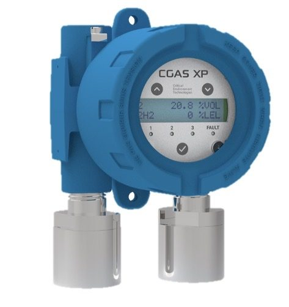
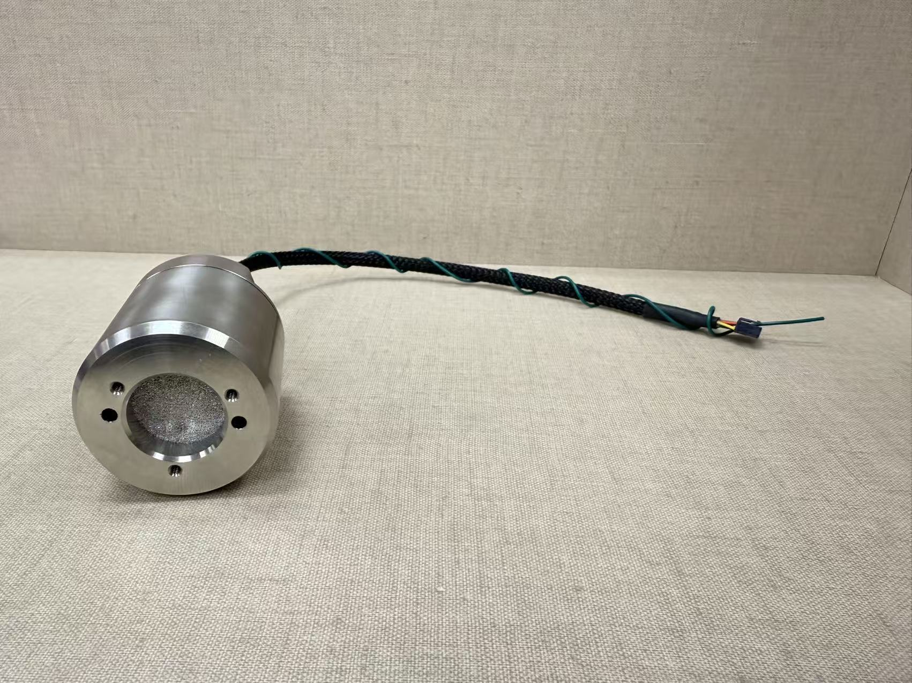
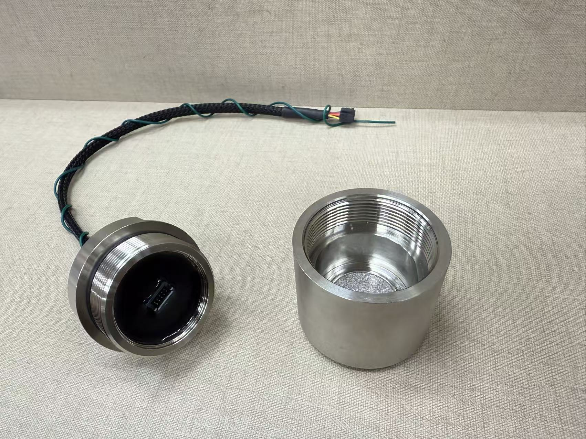
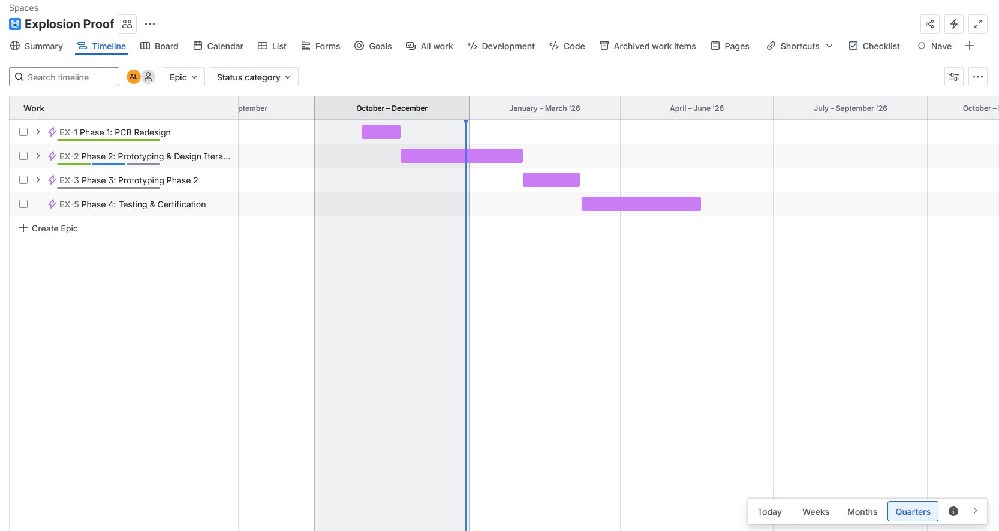

A zero-to-one hardware program to replace a white-label platform with an internally owned explosion-proof detector — from structured discovery through global sourcing, certification, and GTM launch.
The existing explosion-proof offering ran entirely on a white-label product. Despite consistent market demand evidenced by a large volume of quotes over multiple years, conversion remained very low. The root cause was structural: the white-label model made it impossible to compete on price, differentiate on features, or control supply. When the supplier was acquired by a competitor, lead times extended significantly and supply uncertainty became a direct business risk.
The product and commercial model needed to be rebuilt — not patched.
Sole product owner and program lead — product scope, system architecture, feature set, certification strategy, financial modeling, pricing, global component sourcing, channel strategy, and GTM execution.
I ran 10–15 structured customer interviews across three market segments before defining a single feature. The most important finding:
Customers often spec explosion-proof not just for hazardous location classification, but for durability and "industrial look" — whether the device visually belongs in a harsh environment. This shifted positioning away from spec-matching competitors toward building a platform designed to grow into adjacent markets.
Additional strong signals: remote calibration was considered mandatory by every participant (some customers switch to explosion-proof specifically to enable it), native BACnet from the transmitter was a genuine differentiator with virtually no competitor offering it in our segment, and Bluetooth and cloud connectivity received consistent negative feedback — both deliberately excluded from V1.
I designed a platform, not a single SKU — built to support multiple configurations and expand over time:



After researching three certification labs and completing customer discovery, I made the decision to focus V1 on CSA/UL (Class I Division 1) rather than pursuing ATEX simultaneously. ATEX would have added significant incremental cost, 14+ additional weeks, and ongoing audit obligations — for minimal demand uplift in our primary target segment. The decision protected the timeline, preserved budget for GTM investment, and allowed us to build pipeline ahead of launch while certification was in progress.

I built a full NPV model across multiple scenarios to evaluate in-house development vs. continuing with the white-label. Key findings that drove the go decision:
I designed a three-tier market approach to sequence the launch efficiently:
Launch execution included trade show roadshow participation, dealer briefing materials, sales training, and full technical documentation for initial customer meetings.